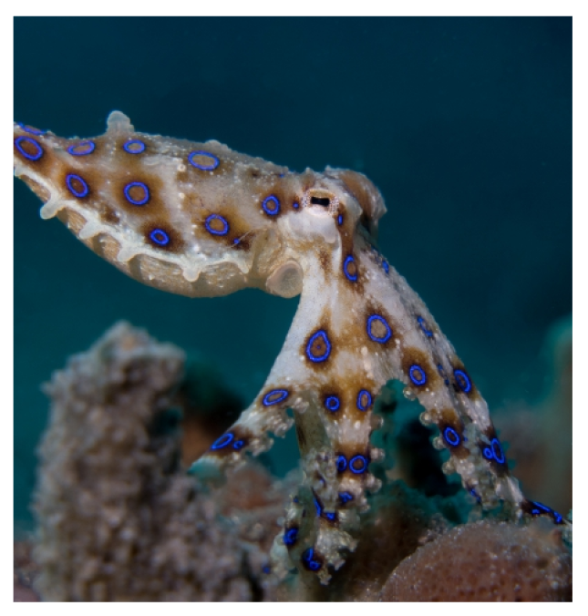

หมึกสายวงน้ำเงิน Blue-ringed Octopus

หมึกสายวงน้ำเงิน (Blue-ringed Octopus) เป็นหมึกที่มีลักษณะเด่นคือลวดลายวงน้ำเงินที่เรืองแสงบนร่างกาย
โดยจะปรากฏเฉพาะเมื่อหมึกมีความเครียดหรือรู้สึกถูกคุกคาม พบได้ในทะเลเขตร้อน
เช่น
ออสเตรเลียและเอเชียตะวันออกเฉียงใต้ หมึกชนิดนี้มีพิษที่มีอันตรายร้ายแรงจากสาร เทโทรโดท็อกซิน (Tetrodotoxin)
ซึ่งเป็นสารพิษที่สามารถทำให้เสียชีวิตได้ภายในเวลาไม่กี่ชั่วโมงหากได้รับพิษ โดยจะมีอาการที่เกิดจากพิษ
เช่น อัมพาต และหายใจลำบาก
หมึกสายวงน้ำเงินมักอาศัยอยู่ในแนวปะการังหรือที่รอยแยกของโขดหินและมีขนาดเล็ก ตัวเต็มวัยมักมีขนาดไม่เกิน 20 เซนติเมตร
แต่สามารถโจมตีได้อย่างรวดเร็วและแม่นยำ เมื่อลวดลายวงน้ำเงินปรากฏ แสดงถึงการเตือนภัยให้ระมัดระวัง!